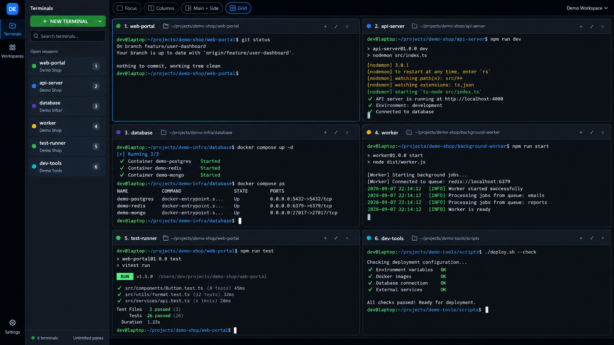

01
Terminal Mosaic
Switch between Focus, Columns, Main + Side, and an elastic Grid. Layouts rebalance without restarting a single shell.
Windows terminal workspace manager
GitDeck runs Git Bash, PowerShell, Command Prompt, and WSL side by side. Park a session without stopping it, then reopen the whole setup in one click.

Six live sessions. Zero tab hunting.
01 Features
GitDeck turns a pile of terminal tabs into a visual workspace where every process has a place—and stays within reach.
Switch between Focus, Columns, Main + Side, and an elastic Grid. Layouts rebalance without restarting a single shell.
Clear a pane from the canvas while its process, output, and scrollback keep running in the Navigator.
Save terminal names, folders, shells, and optional startup commands. Recreate a project setup whenever work resumes.
Search every running or parked session by name, shell, or directory.
Ctrl+TabSee the active branch and working-tree state without exposing Git write actions.
Inspect local listeners and explicitly confirm a process before terminating it.
Shells detected automatically
02 In action
One canvas for the frontend, API, database, worker, tests, and the shell you always need at the last minute.
Know what is running without cycling through tabs.
Use the Windows shells already installed on your machine.
Save the blueprint and return to the same structure later.
03 Workflow
A useful full-stack workspace takes about a minute to assemble—and one click to reopen next time.
Press Ctrl + T, or choose any detected shell from New Terminal.
Focus on one process or keep the entire project in an adaptive grid.
Your names, shells, folders, and startup commands become a reusable blueprint.
04 Privacy & safety
GitDeck is local-first by design. It needs no account, records no terminal input or output, and never installs updates behind your back.
No shell logging. Terminal input and output are never written to GitDeck logs.
Transparent update checks. At most one metadata request per day, only when enabled.
Explicit exits. Closing GitDeck cleanly stops the shell processes it owns.
Your data, your folder. Move the data directory at any time from Settings.
05 Keyboard
The actions you repeat all day are always one shortcut away.
Open a new terminal
Close the focused terminal
Move to the next session
Move to the previous session
06 Install
GitDeck runs on Windows 10 and 11 x64. A normal installation needs neither Node.js nor Git.
Recommended
For managed or silent deployments:
msiexec /i .\GitDeck-Setup-0.5.2-x64.msi /qn
GitDeck is not code-signed yet, so SmartScreen may ask for confirmation. Verify the download came from the official release before selecting “Run anyway.”
07 Questions
No. Parking only removes the pane from the canvas. Its process, output, and scrollback remain available from the Navigator.
No. GitDeck shuts down the processes it owns. A workspace can recreate terminal definitions later, but it does not preserve process memory or output.
The built-in Git integration only reads status information. Commands typed directly into a shell remain unrestricted.
GitDeck only lists shells detected in standard Windows locations. Install the shell, restart GitDeck, and check New Terminal again.
Free & open source